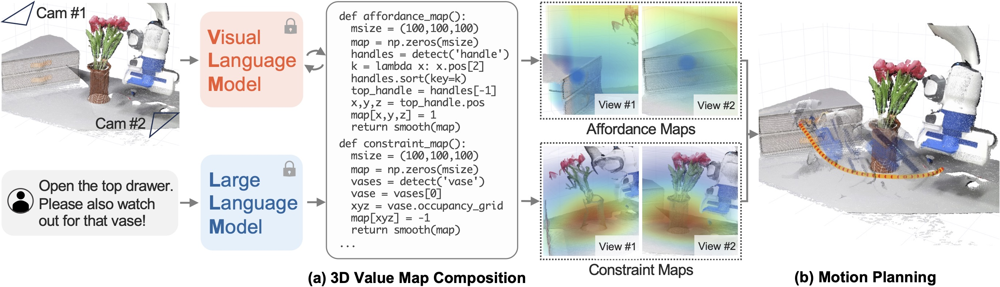

VoxPoser:
Composable 3D Value Maps
for Robotic Manipulation with Language Models
-
CoRL 2023 Submission
Abstract
Large language models (LLMs) are shown to possess a wealth of actionable knowledge that can be extracted for robot manipulation in the form of reasoning and planning. Despite the progress, most still rely on pre-defined motion primitives to carry out the physical interactions with the environment, which remains a major bottleneck. In this work, we aim to synthesize robot trajectories, i.e., a dense sequence of 6-DoF end-effector waypoints, for a large variety of manipulation tasks given an open-set of instructions and an open-set of objects. We achieve this by first observing that LLMs excel at inferring affordances and constraints given a free-form language instruction. More importantly, by leveraging their code-writing capabilities, they can interact with a visual-language model (VLM) to compose 3D value maps to ground the knowledge into the observation space of the agent. The composed value maps are then used in a model-based planning framework to zero-shot synthesize closed-loop robot trajectories with robustness to dynamic perturbations. We further demonstrate how the proposed framework can benefit from online experiences by efficiently learning a dynamics model for scenes that involve contact-rich interactions. We present a large-scale study of the proposed method in both simulated and real-robot environments, showcasing the ability to perform over 30 everyday manipulation tasks specified in free-form natural language.
Method Overview

VoxPoser extracts language-conditioned affordances and constraints from LLMs and grounds them to 3D value maps using VLMs, without additional training to either component. The value maps can zero-shot synthesize trajectories for large varieties of everyday manipulation tasks with an open-set of instructions and an open-set of objects.
Example Rollouts and Interactive Value Maps
Execution under Disturbances
"Close the top drawer"
"Sort the paper trash into the blue tray"